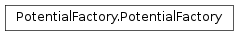
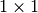
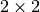

The WaveBlocks Project
@author: R. Bourquin @copyright: Copyright (C) 2010, 2011, 2012 R. Bourquin @license: Modified BSD License

A factory for MatrixPotential instances. We decide which subclass of the abstract base class MatrixPotential to instantiate according to the size of the potential’s matrix. For a  matrix we can use the class MatrixPotential1S which implements simplified scalar symbolic calculations. In the case of a  matrix we use the class MatrixPotential2S that implements the full symbolic calculations for matrices. And for matrices of size bigger than symbolic calculations are unfeasible and we have to fall back to pure numerical methods implemented in MatrixPotentialMS.
The method that creates a MatrixPotential instance and decides which subclass to instantiate depending on the given potential expression.
| Parameters: | parameters – A ParameterProvider instance with all necessary parameters (at least a potential entry). |
|---|---|
| Returns: | An adequate MatrixPotential instance. |
| Raises: | ValueError In case of various input error, f.e. if the potential can not be found or if the potential matrix is not square etc. |